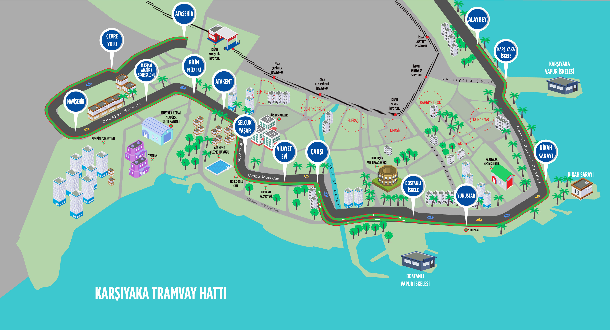

Karşıyaka Tramvayı Hattı
Karşıyaka Tramvayı, İzmir'in Karşıyaka ilçesinin en önemli ulaşım hattıdır ve 2017 yılında hizmete girmiştir. Bu hat, Karşıyaka'nın sahil boyunca uzanarak büyük bir yolcu kapasitesine hizmet etmektedir.

Hat Bilgileri
| Hat Uzunluğu | 8.8 km |
|---|---|
| İşletmeye Açılış Yılı | 2017 |
| İstasyon Sayısı | 10 |
| Günlük Yolcu Sayısı | 70,000 |
| İstasyonlar | Karşıyaka, Bostanlı, Alaybey, ve diğerleri |